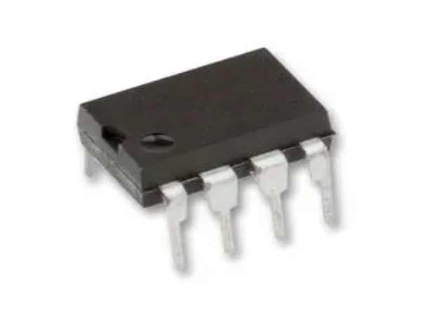
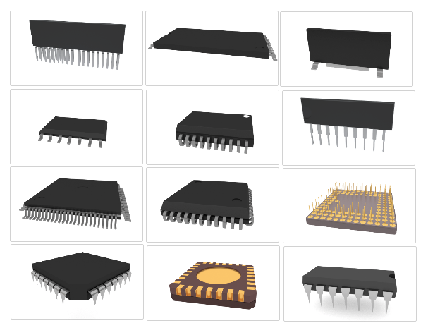

One of most popular IC chips is the LM555

The IC 555 is used in Led flashers, oscillators and PWM signals

Integrated Circuit: Is a Chip which is made up of several electronic components such as resistors, capacitors, inductors, and transistors. ICs are built in a small block or a chip of a semiconductor (silicon).
ICs are widely used in microprocessors, computers, computer networks, frequency counters and digital
signal processors.

The IC 555 is used in Led flashers, oscillators and PWM signals